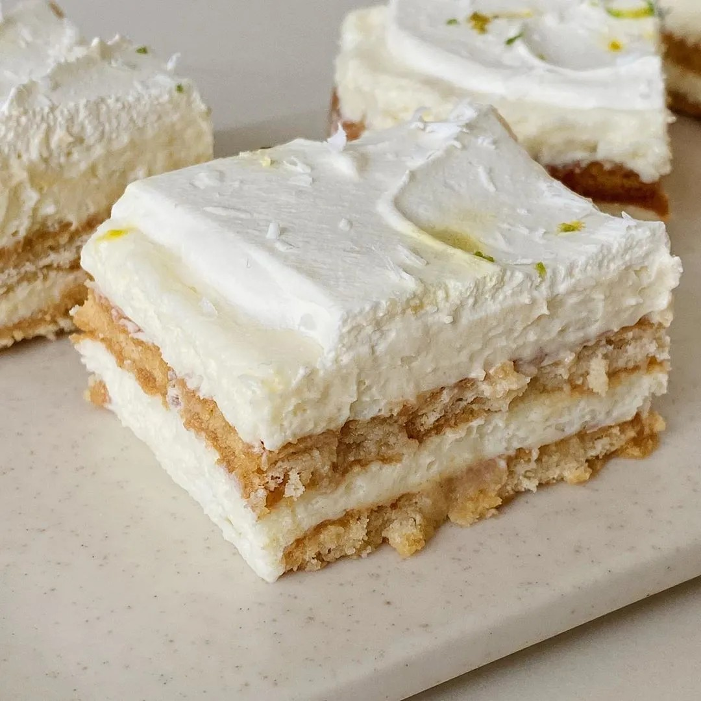

Una Vainitorta Alimonada
Una receta fácil de hacer y disfrutar. La sugerencia es de Estefi Colombo (@esteficolombo).
Ingredientes:
- 200 cc crema de leche (batir a medio punto)
- 1 pote de leche condensada
- ralladura de 2 limones
- 100 cc jugo de limón
- 3 paquetes de galletita de vainilla
- 200 cc leche

Pastel alimonado con leche condensada / Instagram: esteficolombo.
Preparación
- Batir la crema a medio punto.
- Unir leche condensada + jugo y ralladura, mezclar hasta que espese, luego agregar la crema semi batida con movimientos envolventes. Reservar.
- Calentar la leche hasta entibiar.
- Mojar las galletitas en la leche tibia y colocarlas en la base del molde, una al lado de la otra cubriendo toda la base.
- Colocar una parte del mix y cubrir nuevamente con galletitas mojadas en leche y poner mix. Realizar este mismo procedimiento galletita húmeda – mix hasta la altura que deseen.
- Llevar a frío y desmoldar.
Para esta receta vamos a necesitar un molde de silicona, que puede ser de esos con base de vidrio de 26x26x5 de altura.
Algunos tips:
- Esta torta la pueden decorar con crema extra, ralladura y virutas de chocolate blanco.
- Si la consumen de un día para otro, es mucho más rica.